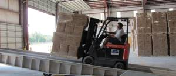

Commercial Industries served
Healthcare
Food & Beverage
Distribution & Warehousing
Hotel/Motel
Resorts
Restaurants
Property Management
Educational Facilities
Pharmaceutical
Manufacturing
Apartment Complexes
Property Management
Commercial Philosophy
Vital Pest Management has highly trained Commercial Only Specialists that work in our commercial facilities. Our Commercial staff specializes in servicing industries that require the highest standards in pest management and audit requirements. We design and implement strategies that are specific to a commercial structure and the rigorous demands and pest pressure those types of facilities are subject to. Our focus is to identify specific requirements for that facility, design and implement a strategy that is sustainable while remaining fluid enough to adjust to changes in the environment and seasonality. The need for cooperation is paramount so we perform QA checks, site walk through and utilize pest sighting
logs to assure everyone is engaged and helping to continually be part of a pest free environment.